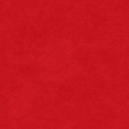
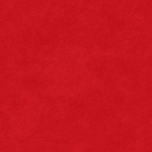
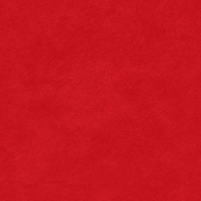
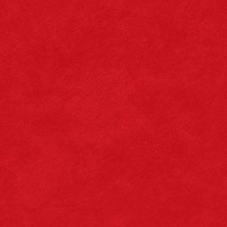
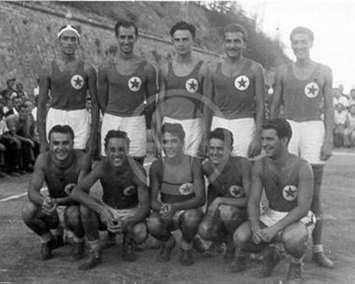
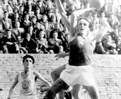

 Кошаркашки клуб Црвена звезда основан је 04.03.1945. године и од тада је освојено је 19 титула шампиона, 9 националних Купова и Куп европских победника купова, три регионалне АБА лиге, док су бројни црвено-бели асови освајали олимпијске медаље, као и медаље на светским и европским првенствима.
Од прве утакмице подно раскошно расцветалог Калемегдана, када се није знало шта значе речи зона
, пресинг
, индивидуална одбрана
, контранапад
, када су кошаркашке патике, дрес, тренерке, штитници за ноге били само мисаона именица, до данас Црвена звезда је била и остала кошаркашки бастион.
Полако, ни из чега, првих година Звезда је савладавајући тешкоће (поправљено игралиште, набављени нови кошеви, сашивени дресови, набављене нове лопте…) кренула да побеђује све своје противнике, остварујући резултате са којима се нико није могао поредити.
Тако је почело златно доба
Црвене звезде, освојено је десет узастопних шампионских титула. У то време није се могла замислити ниједна национална селекција без седам-осам кошаркаша Црвене звезде, а прву петорку коју су сачињавали Небојша Поповић, Тулио Роклицер, Александар Гец, Ладислав Демшар и Срђа Калембер и дан данас многи сматрају петорком
снова
.
Они су у дресовима, ишараним звездицама, симболима освојених шампионата, имали свој стил. Обезбедили су просперитет нашој кошарци, створили јој славу, забележили прве међународне успехе и препустили своје место у тиму новим генерацијама. Величина петорке снова је и у њеној пионирској, готово промотерској улози у нашој кошарци. Представљали су диван мозаик хармонично укомпонованих различитих врлина. Београд ће заувек памтити те асове јер су истовремено постизали врхунске резултате и забављали публику духовитом игром.
Више информација о историји кошаркашког клуба Црвена Звезда можете пронаћи на линку
kkcrvenazvezda.rs.
У такмичарску 2016-2017 тим је ушао са неколико измена. Вратио се Џенкинс, стигао је Кузмић, током сезоне пристигли су Волтерс и Томпсон, своју шансу добио је Добрић... И поново се завшило историјском сезоном...
Екипа је сјајно играла Евролигу, памтиће се серија од 7 узастопних победа у низу, током зиме. Екипа је по први пут у новом формату са 30 кола, показала пуно, носила се са знато скупљим и квалитетнијим тимовима, оставила иза себе на табели великане попут Барселоне, Макабија... али је остала без плеј офа и завршила на 9.месту.
Ипак, тим је освојио АБА лигу, и то доминатним играма у финалу против Цедевите, а након тријумфа од 3-0, црвено-бели су још једном обезбедили пласман у Евролигу.Доминација у домаћим оквирима потврђена је освајањам националног купа против Партизана у Нишу, а нова „трипла круна" потврђена је освајањем домаћег првенства и то против ФМП-а резултатом 3-0. Уз трофеје, још једна потврда доброг рада клуба била је промоција неколицине играча, а у финалу Суперлиге искочио је Добрић, који је проглашен и за најкориснијег играча финалне серије.Завеса на још једну успешну сезону је пала... Црвена звезда мтс наставља и даље са истим циљевима и амбицијама... Да осваја трофеје у домаћим и регионалним оквирима, и на што бољи начин представља Србију у Евролиги...